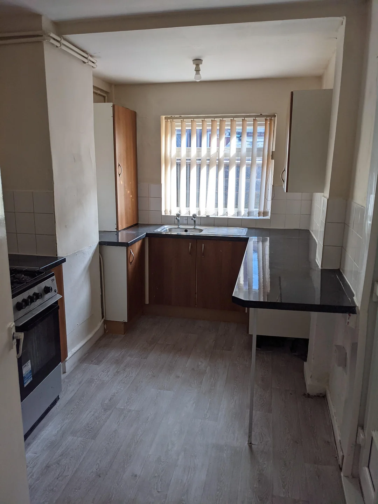
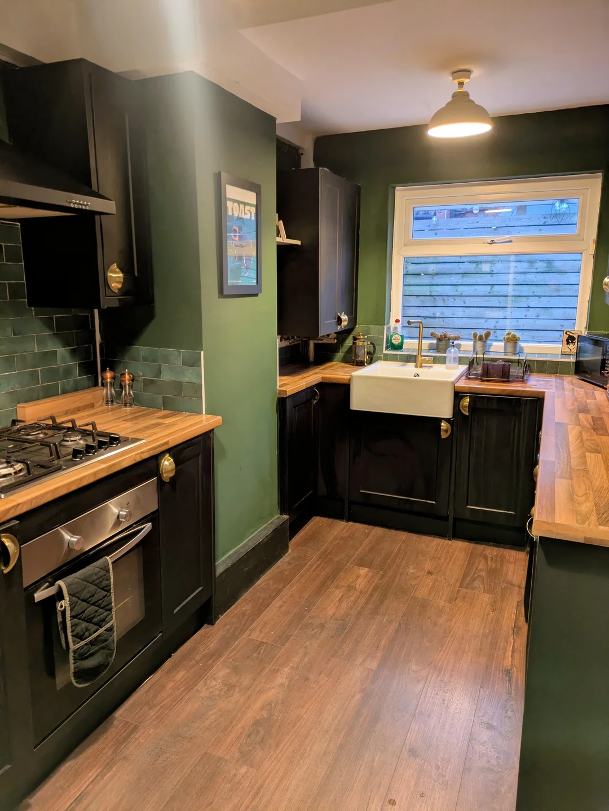

Every project photographed before and after — because the work should speak for itself.
Complete interior transformation with custom color consultation
Historic home exterior restoration with period-appropriate colors


Cabinet painting — a transformed kitchen without a renovation
Complete deck refinishing with weather-resistant stain
Restrained palette, quiet result
White body, dark green trim — a classic that doesn't age